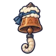
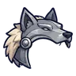
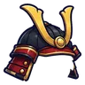
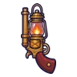

หมอผีกระดูก
มอนธาตุอมตะ Lv 46–52
เจอที่
| แมพ | โซน | Lv | ภูมิภาค |
|---|---|---|---|
| สุสานใต้ดิน ชั้น 2 · ห้องราชา | 46–52 | ป่ากองไฟ | |
| หอรากมืด (Dark Root) | ห้องกระดูก | 24–33 |
ค่าสถานะตามเลเวล
| Lv | HP | ATK | DEF | MDEF | EXP | Job |
|---|---|---|---|---|---|---|
| 46 | 8,031 | 60–90 | 13 | 18 | 64 | 48 |
| 49 | 9,564 | 64–96 | 14 | 19 | 68 | 51 |
| 52 | 11,215 | 67–101 | 15 | 20 | 72 | 54 |
ตีด้วยธาตุไหนดี
แรงขึ้น: ศักดิ์สิทธิ์ ×1.5 ไฟ ×1.25
เบาลง: พิษ ×0 มืด ×0 อมตะ ×0
วัตถุดิบที่ดรอป
| ของ | โอกาส | |
|---|---|---|
| เครื่องรางกระดูกฟ้า | 55% | 1 ชิ้น (15% ได้ 2) |
อุปกรณ์ที่ดรอป (4)
| ของ | โอกาส |
|---|---|
 กระดิ่งวิญญาณแกะเมฆ | 0.25% |
 หมวกเกราะหูหมาป่า | 0.08% |
 หมวกเกราะเขาทอง | 0.08% |
 ปืนพกคู่ตะเกียงแคมป์ | 0.06% |
สกิล
ทุบพื้น (Lv 25+) · ทุบพื้น (Lv 60+) · ดึง (Lv 60+)